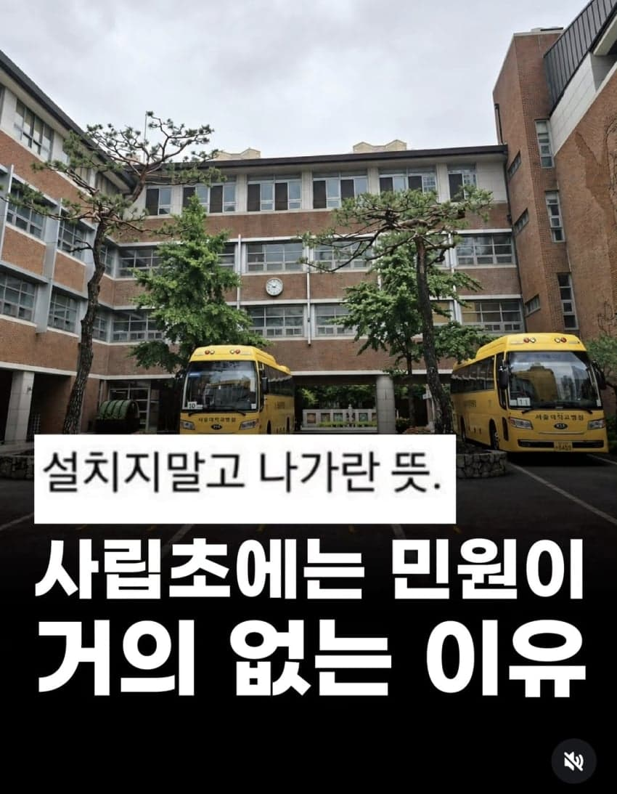
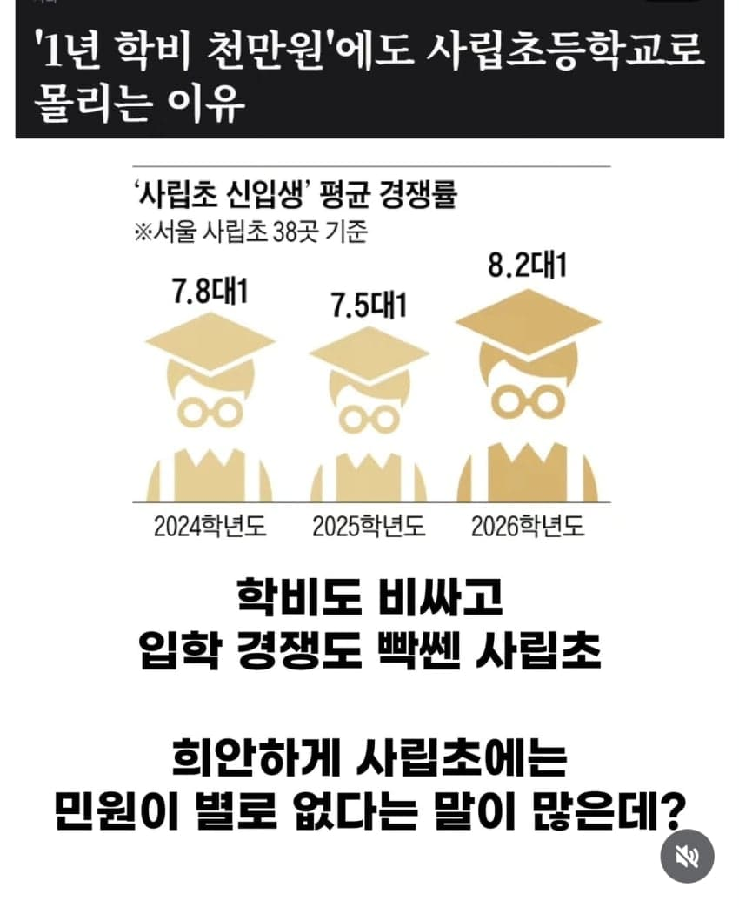
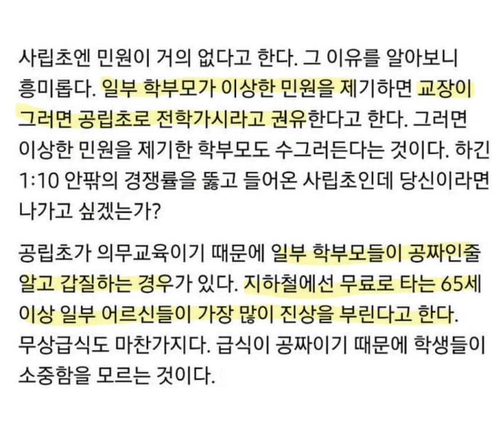

교육이든 급식이든 뭐든 돈을 받아야 진상이 안생기는듯



교육이든 급식이든 뭐든 돈을 받아야 진상이 안생기는듯
나때는 1.3:1 이정도였는데 얼마전에 보니 7:1찍고있더라 ㅋㅋ 뭔일인지
무사급식은 기본 단가가 낮게 설정되서 문제인거 같음. 3분의 1정도 추가 비용을 각 학생에게 받아도 지금보다 훨씬 좋아질건데 부담도 그렇게 안돼고
돈 많으면 돈 써야지
일반 학교도 좆병신 부모는 100에 한가정 정도인데
그 파장이 너무 커서
애초에 요즘은 사립은 갑이 학교임.
학생이 사고친다? -> 부모가 두들겨 패서라도 알아서 교육시킴
학생이 선생에게 개긴다? -> 부모가 두들겨 패서라도 알아서 교육시킴
학생이 답이 없다 -> 경고누적, 퇴학
애초에 학생이든 부모든 진상끼가 있다? -> 응 입학도 안되 꺼져~
의무교육인게 문제임 병신들 쫒아내서 초졸 중졸로 살아가게 만들면 정상화 가능
이거 구라라고 하지 않았나? 차이가 있긴한데 사립초도 민원에 시달린다고 했던거 같은데
어제 내가 댓글 쓴게 이 초등학교인가보다
명품 매장가면 손님이 직원 눈치보는 거랑 비슷함.
의료도 마찬가지 병원 문턱이 낮으니 온갖진상들이 생기는것임
비슷하게 비싼 동네에서 살아야하는 이유지
논리가 이상한데?
결론을 내고 근거를 끼워맞춘 느낌
나도 리라초 다녔는데 글은 뭔 사립초를 억지로 쥐어짜서 보내는 부모가 있는거처럼 말하네 그냥 돈 어느정도 있고 부담안되는선에서 보내는거지 나는 사촌형제들 전부 리라초 나와서 나도 할아버지가 자기집에서 데리고 다닐꺼라고 부모님이 시간나면 오는식으로 맡겨짐
곳간에서 인심나오는거임 ㅇㅇ 공짜라고 진상이 많으면 강남3구 무료시설들은 뭐삼요...
공짜여도 풍요로우면 별일없음
그럴듯하게 지 사족섞은 개소리를 쳐하네
걍 진상도 지들이 더 아쉬우면 수그러든다가 맞음